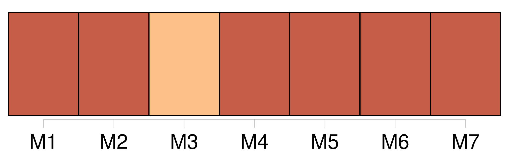
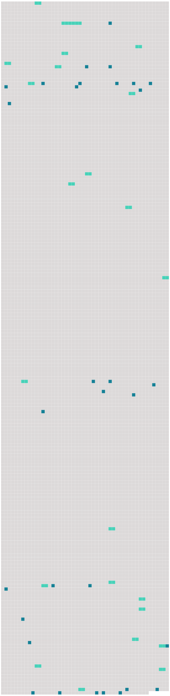

Longueur nb maillons : 54 mentions |
  |
Je revis mon père les deux poings levés, et [ma mère] dressée en face de lui comme la plus méchante des femmes. [12 phrases]
[Ma mère si légère d'habitude] , marchait presque lourdement, et mon père [la] suivait, tête basse, et son chapeau à la main comme à un enterrement. [16 phrases] Ce n'était pas [ma mère] occupée au dehors ainsi que mon père. [5 phrases]
[Ma mère] essaya de me tranquilliser en m'assurant que tout allait bien à la maison, et mon père agacé par mon insistance finit par me dire : [5 phrases]
À sa mort, trois ans plus tôt, j'étais déjà grande et forte et [ma mère] avait décidé que je resterais à la garde des jumeaux, et qu'on m'adjoindrait une femme de ménage pour m'éviter les gros travaux. [2 phrases]
Et pendant les vacances [notre mère] nous emmenait dans la petite maison qu' [elle] possédait, tout près de chez [son] frère, que nous appelions oncle meunier, et dont le moulin tournait sur une jolie rivière descendant à la Loire. [8 phrases] [Notre mère] croyant tous [ses] enfants endormis pleurait sans contrainte dans la chambre voisine. [Elle] ne faisait pas de violents reproches comme d'habitude.
[Elle] répétait seulement à travers [ses] pleurs :
[Ses] sanglots étaient si pressés et si déchirants que nous retenions notre souffle pour ne pas nous mettre à crier comme [elle] [3 phrases] « Pourquoi [m'] as -tu repris ton amour?? [2 phrases]
Et le cœur tout gonflé de regret, en pensant que nous ne pouvions rendre à [notre mère] ce bien si précieux, nous étions restés longtemps dans la ruelle, glacés par le froid, et serrés l'un contre l'autre comme deux coupables. [4 phrases]
Nous nous aimions profondément, et pour mon compte, [j'] aurais pu jurer que, de toute ma famille, c'était lui qui m'était le plus cher. [53 phrases] Dans un instant, mon père et [ma mère] viendront me prendre pour me conduire au moulin de la Haie, chez oncle meunier, où je continuerai à vivre étendue, en attendant ma complète guérison. [6 phrases] Et, sans embrasser [sa sœur] ni tendre la main à son beau-frère, il me soulève de la banquette et m'emporte jusqu'à la voiture longue et basse, dans laquelle je passerai dorénavant toutes mes journées. [15 phrases]
Tante Rude me l'apprend sans douceur, tandis que mon père et [ma mère] , avec des mots affectueux, et mille précautions m'installent dans un lit tout préparé. [40 phrases]
Il me semblait que mon père et [ma mère] tenaient le bout d'une chaîne solidement rivée à ma poitrine, et que c'était cette chaîne -là qui se tendait et vibrait si durement dans l'espace. [49 phrases] Vers la fin de juillet [ma mère] me prévint que les enfants passeraient leurs vacances à Paris. Il fallait éviter les grosses dépenses, disait [-elle]
Au surplus, [elle] espérait que les enfants se maintiendraient en bonne santé en allant jouer tout le jour au Jardin des plantes assez proche de chez nous. [2 phrases]
Il disait : [2 phrases] « J'ai d'abord à te dire que papa et [maman] sont toujours bien sages. [2 phrases]
[Maman] m'a bien défendu de t'en parler, aussi, je le fais en cachette. [13 phrases] Aussi, Angèle qui a toujours faim de chocolat, m'a promis de se plaindre à [maman] [79 phrases] Quand un plat m'échappait de même c'était au tour de [ma mère] de dire : « Allons!! [32 phrases]
D'être boiteuse ne pouvait pas m'empêcher de reprendre ma place à la maison, et j'annonçai chez nous la nouvelle de ma guérison avec l'espoir que [ma mère] allait me rappeler sur l'heure. [1 phrases] « Sois patiente et prends des forces » me disait [ma mère] [Elle] parlait des examens scolaires d'Angèle et de Firmin.
[Elle] parlait d'une foule de choses que je savais déjà, mais de la date de mon retour il n'était pas question dans [sa] lettre. [8 phrases] Ce fut là ma seule réponse, car à toute heure je retrouvais dans ses yeux la même tendresse que dans ceux de [ma mère] ; et le même sourire sur ses lèvres plus fortes. [5 phrases] Au lieu de l'appel de [ma mère] ce fut une lettre de Firmin qui arriva. [6 phrases]
La voici : [13 phrases]
[Ma mère] fut aussi vite qu'eux auprès de moi. [1 phrases]
me dit [-elle] [4 phrases]
Tous s'étonnèrent de me voir si grande, car maintenant je dépassais [ma mère] [dont] la taille était cependant élevée. [12 phrases] Je courus à la petite barrière de sortie et là, j'aperçus mon père et [ma mère] un peu à l'écart. [3 phrases]
Mon père monta aussitôt dans la voiture qui se trouvait devant lui, tandis que [ma mère] s'éloignait rapidement pour monter dans une autre voiture. [10 phrases] L'avenir devint très vite redoutable, car à mes questions directes, [ma mère] fut bien forcée de m'apprendre l'abandon définitif du foyer par [son] mari, et la demande en divorce qu' [elle] formulait contre lui. Pendant le temps que durerait le procès, [elle] allait nous laisser sous la surveillance de [son] frère.
Et, autant qu'à Paris, disait [-elle] , [elle] comptait sur moi pour [la] remplacer auprès de mes frères et sœurs. |
 |
La ressource peut être téléchargée sur la page Ortolang
Si vous avez des questions ou vous voyez des erreurs, merci d'envoyer un mail à silvia.federzoni89@gmail.com
Site développé par S. Federzoni (contact)